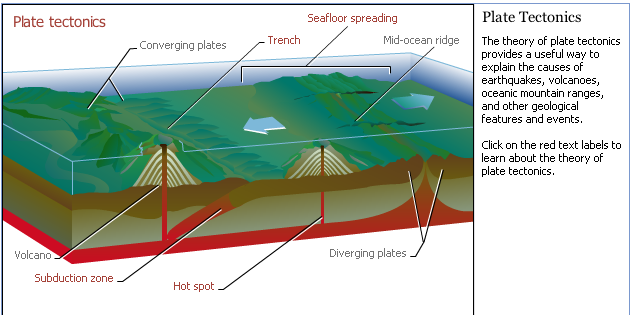

Learning Target
I can explain how plate movement creates Earth's major geologic features.
I can explain how plate movement creates Earth's major geologic features.
Mission Progress: 0 of 8 features explored.

Click the red labels to learn about each tectonic feature.
Mission Progress: 0 of 8 features explored.